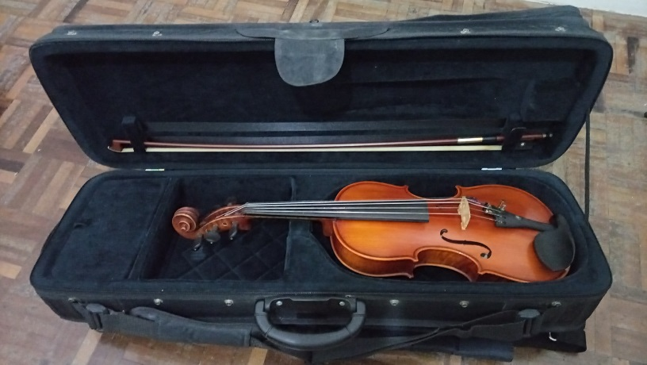
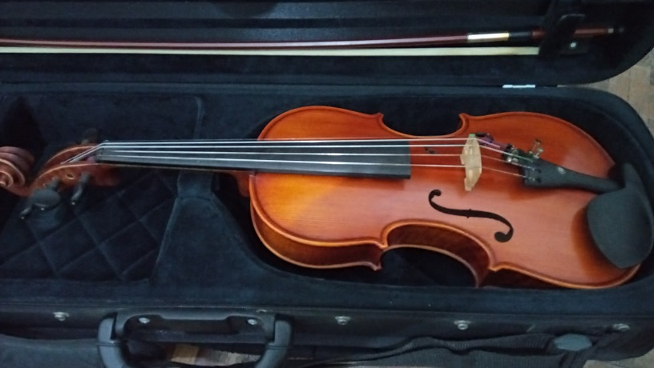
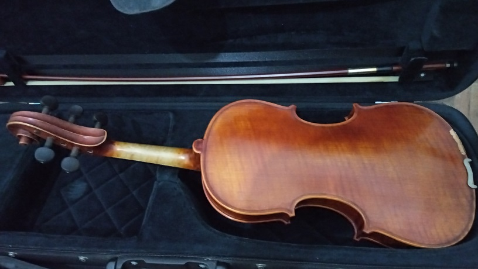
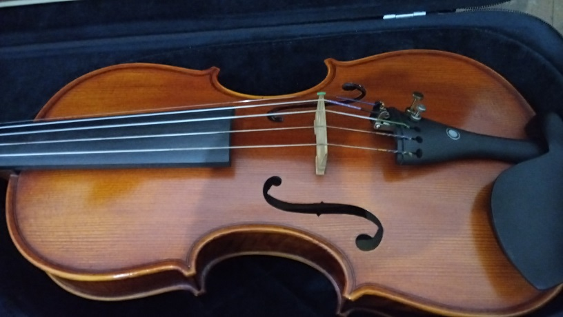
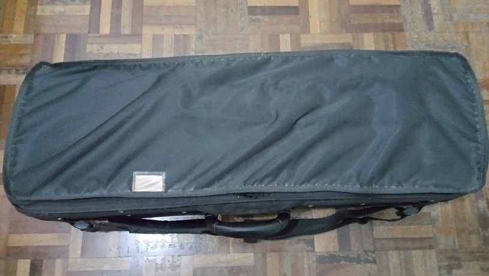
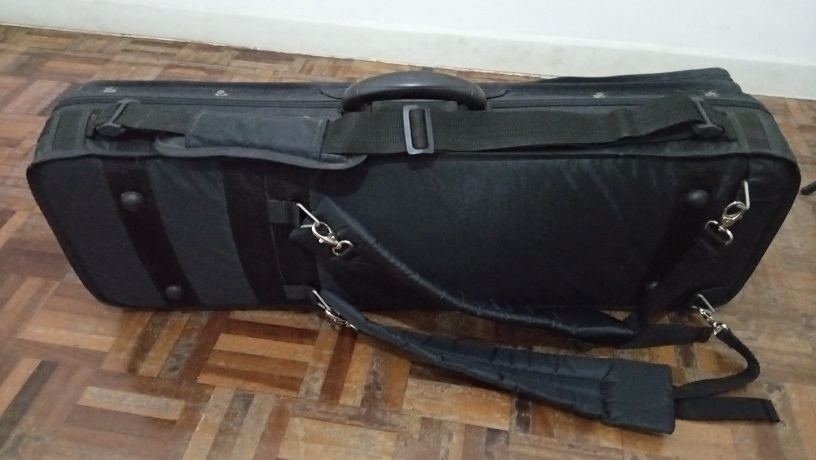

O violino de 5 cordas é o instrumento ideal para quem quer a agilidade e os agudos do violino combinado com o som encorpado da viola.

O violino de 5 cordas tem o mesmo tamanho de um violino convencional, porém com a adição da corda dó da viola.

O violino de 5 cordas tem um fundo bem bonito.

De perto é possível ver que o violino de 5 cordas tem um ótimo acabamento.

O violino de 5 cordas vem acompanhado de um belo estojo, com design arrojado e confortável de carregar.

Carregar um estojo com um violino de 5 cordas é bem mais prático do que carregar 2 estojos com 2 instrumentos diferentes.